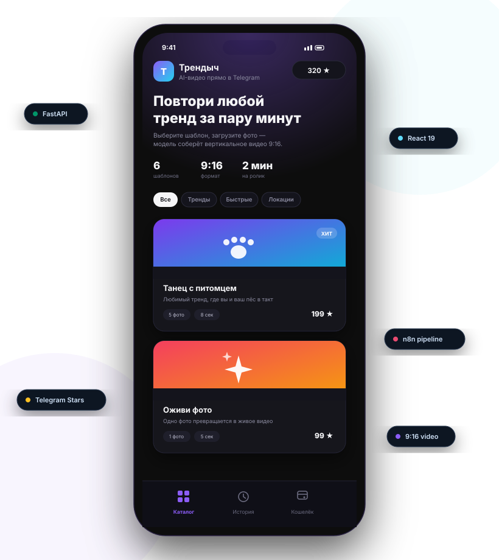
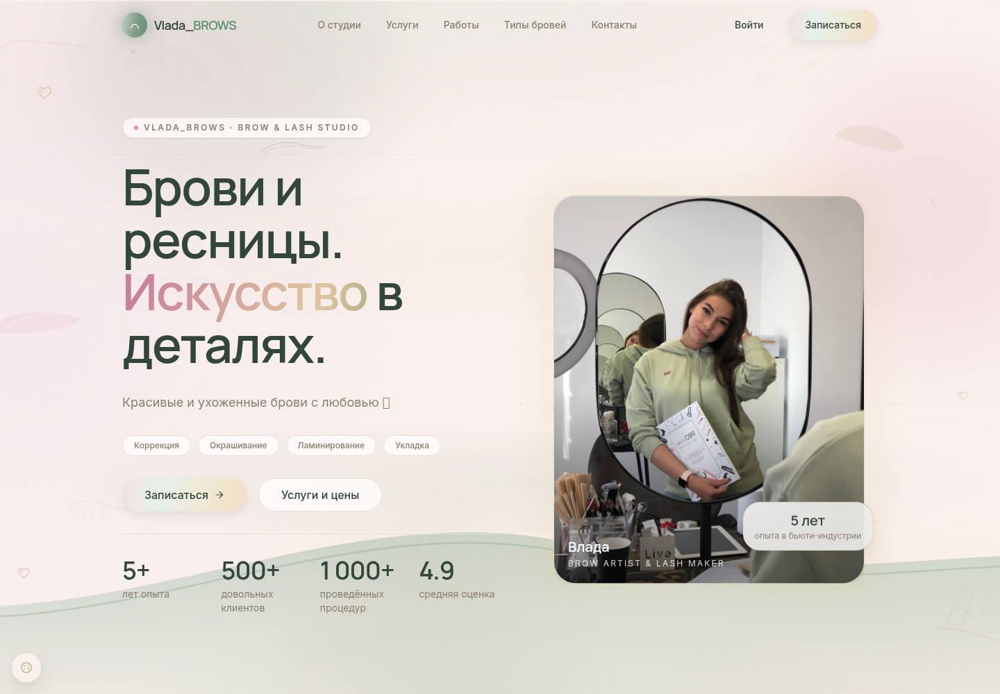
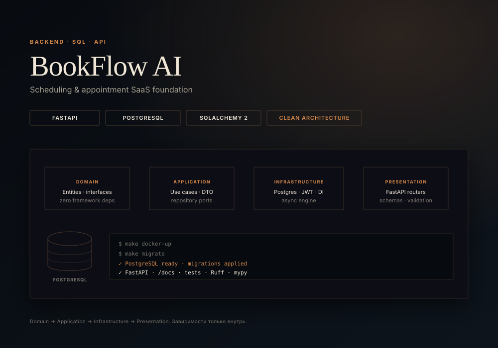
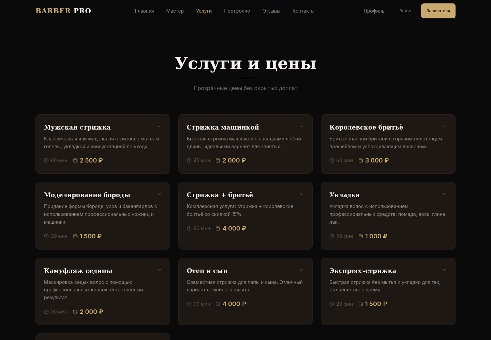

Продукт01
Трендыч
Telegram Mini App для AI-видео 9:16
Каталог шаблонов, загрузка фото, оплата Stars, очередь генерации и результат. 23 REST endpoint и 9 таблиц.
23 endpoint9 таблицlive Stars
n8n, Telegram, API, SQL и LLM. Соединяю процесс, данные и модели так, чтобы это работало в продакшене, а не только в демо.
Не учебные примеры: продуктовый Mini App с оплатой, автоматизация заявок с SLA и мультимодальный ассистент. В каждом — данные, интеграции и обработка ошибок.

Telegram Mini App для AI-видео 9:16
Каталог шаблонов, загрузка фото, оплата Stars, очередь генерации и результат. 23 REST endpoint и 9 таблиц.

Заявки из Telegram с AI-триажем и SLA
LLM определяет категорию и приоритет, PostgreSQL хранит SLA и стоимость, менеджер получает карточку с кнопками.

Мультимодальный бот: текст, голос, фото, /image
Один webhook, Switch по типу сообщения и разные модели под задачу. Понятные fallback-ответы вместо тишины.
Коммерческая платформа, backend-фундамент и booking SaaS.

Коммерческая платформа для студии бровей и ресниц: лендинг, онлайн-запись, OAuth VK/Яндекс, админ-панель, аудит и защита от CSRF/CSP.

Фундамент scheduling-SaaS: FastAPI, async SQLAlchemy, PostgreSQL, Clean Architecture, JWT и тесты.

Не список библиотек, а рабочие связки: от схемы данных и API до интерфейса и деплоя.
Открыт к ролям AI Automation Engineer, n8n-разработчика, Full-stack (Python / React) и интегратора. Удалённо.